Six representative cell × state pairs from the correction round 1 evidence, shipped image beside measured overlay.
The correction that produced these frames moved the exact-value panel inboard of the right rail. Before it, the panel was laid out after the rail in the same row and pushed the rail away from the window edge — about 320 dp in a short landscape window and about 360 dp on a tablet — for as long as Exact or Details was open.
The technical result is already reported: all 66 measured rows conform, and the deltas below are the recorded ones. What is being asked here is the visual judgement, which the measurement cannot give.
| cell | state | Δtop | Δright | Δwidth | anchor |
|---|---|---|---|---|---|
| C10 | TRANSFORM MOVE WORLD | +0.5 | 0 | -4 | PASS |
| C10 | EXACT IME | +0.5 | 0 | -4 | PASS |
| L10 | EXACT IME | 0 | 0 | -4 | PASS |
| L13 | SCULPT DETAILS | 0 | 0 | -4 | PASS |
| E10 | EXACT IME | -1 | 0 | -4 | PASS |
| E13 | SCULPT DETAILS | -1 | 0 | -4 | PASS |
Three things, in every pair:
— Does the rail still read as a narrow strip hugging the window edge?
— Does Exact / Details sit inboard, to the left of the rail, with the rail unmoved?
— Is there any visible overlap, jump, detached control grammar, or viewport lost for no reason?
| anchor | accepted | measured | Δ |
|---|---|---|---|
| top | 112 dp | 112.5 dp | +0.5 dp |
| right | 8 dp | 8 dp | 0 dp |
| width | 72 dp | 68 dp | -4 dp |
| height | content-driven | 448 dp | not an anchor |
Does the rail still read as a narrow strip hugging the edge, with Move/Rotate/Scale and World/Local stacked inside it rather than as detached capsules?
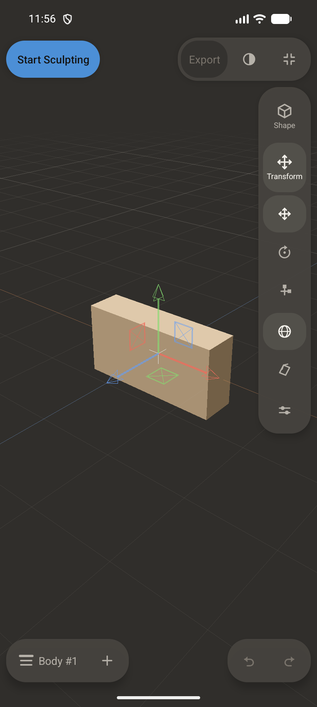
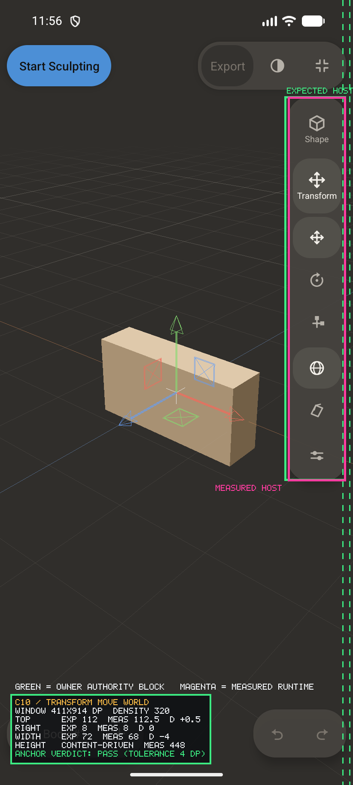
| anchor | accepted | measured | Δ |
|---|---|---|---|
| top | 112 dp | 112.5 dp | +0.5 dp |
| right | 8 dp | 8 dp | 0 dp |
| width | 72 dp | 68 dp | -4 dp |
| height | content-driven | 434.5 dp | not an anchor |
With the keyboard up, does the rail stay put and keep its edge, and does the sheet sit below the rail rather than under or over it?
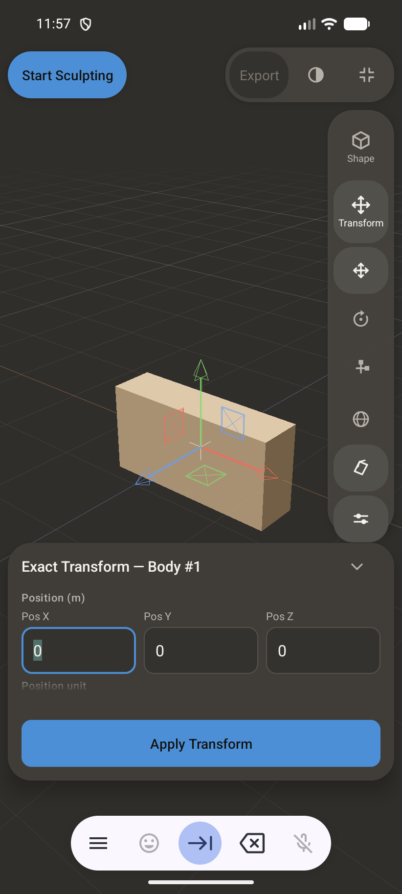
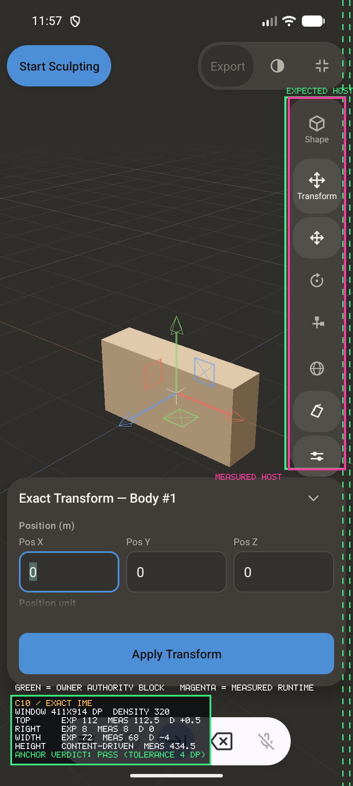
| anchor | accepted | measured | Δ |
|---|---|---|---|
| top | 88 dp | 88 dp | 0 dp |
| right | 8 dp | 8 dp | 0 dp |
| width | 72 dp | 68 dp | -4 dp |
| height | content-driven | 235 dp | not an anchor |
Does Exact sit inboard — to the LEFT of the fixed rail — with the rail still at the window edge? This is the cell the correction is for.
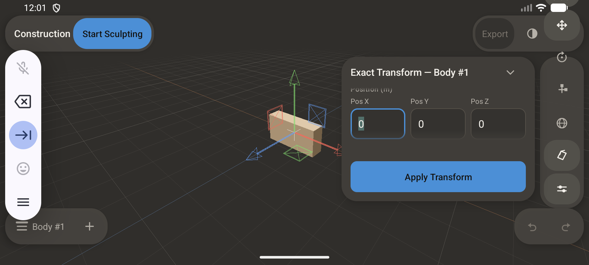
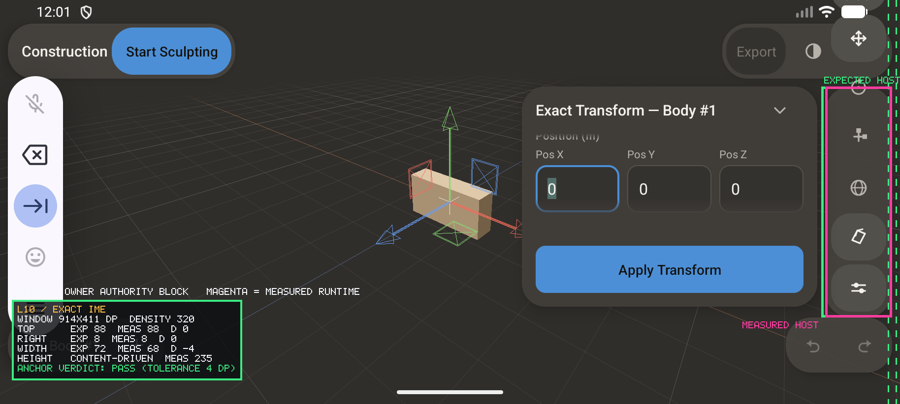
| anchor | accepted | measured | Δ |
|---|---|---|---|
| top | 88 dp | 88 dp | 0 dp |
| right | 8 dp | 8 dp | 0 dp |
| width | 72 dp | 68 dp | -4 dp |
| height | content-driven | 235 dp | not an anchor |
At the larger font, does Details still sit left of the rail with no overlap, and does the rail hold the same narrow width?
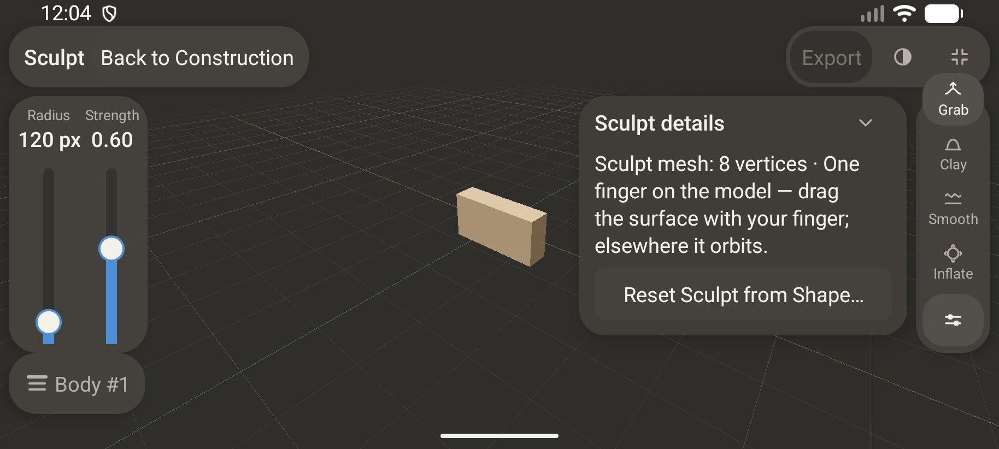
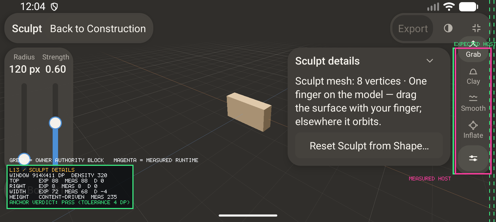
| anchor | accepted | measured | Δ |
|---|---|---|---|
| top | 108 dp | 107 dp | -1 dp |
| right | 8 dp | 8 dp | 0 dp |
| width | 72 dp | 68 dp | -4 dp |
| height | content-driven | 448 dp | not an anchor |
On a tablet, is the docked Exact panel clear of the rail, and has the rail kept the trailing edge instead of being pushed inward by it?
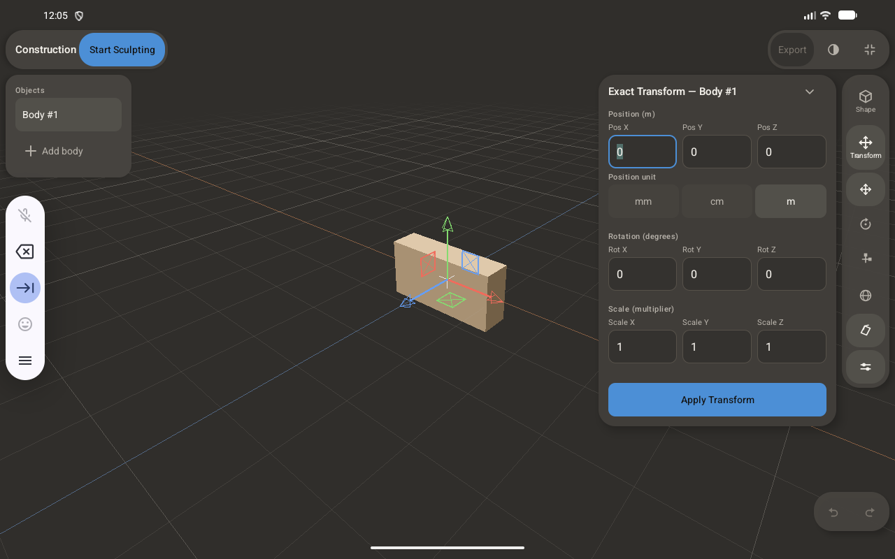
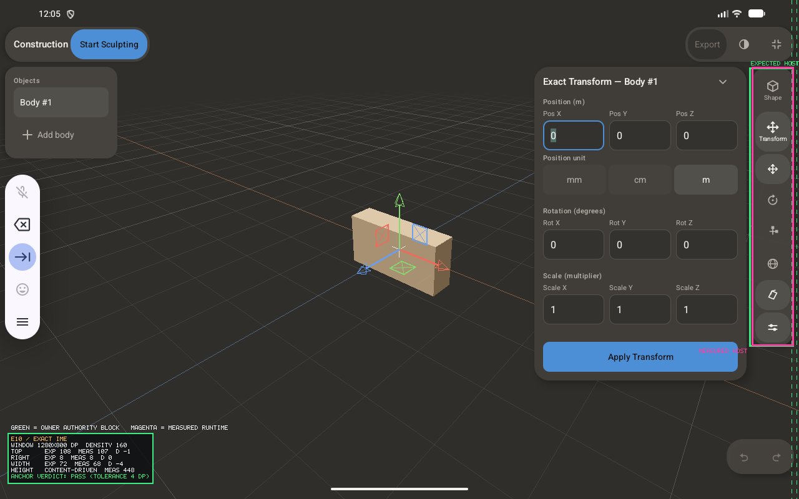
| anchor | accepted | measured | Δ |
|---|---|---|---|
| top | 108 dp | 107 dp | -1 dp |
| right | 8 dp | 8 dp | 0 dp |
| width | 72 dp | 68 dp | -4 dp |
| height | content-driven | 326 dp | not an anchor |
At the larger font on a tablet, is there any visible overlap, jump, detached grammar, or viewport lost for no reason?
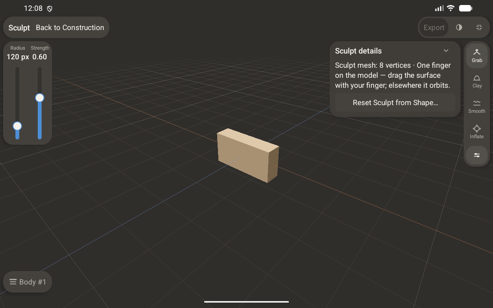
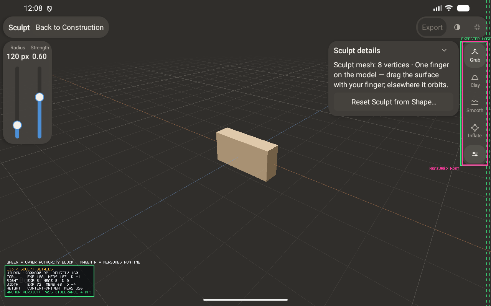